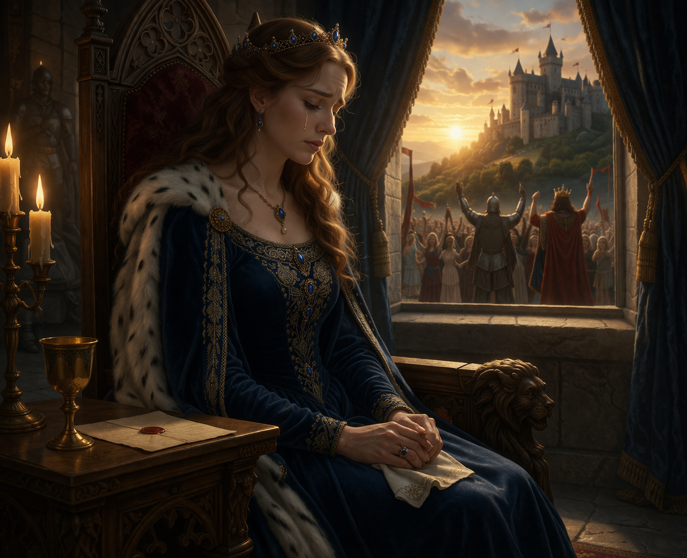

Character Analysis: Duty vs Desire
Guinevere is not simply a disloyal queen, but a character who represents the tension between personal desire and social duty. In many medieval texts, queens were expected to embody loyalty and stability. However, Guinevere challenges this ideal by following her own emotions. Her relationship with Lancelot is not only a romantic betrayal, but also a reflection of the limitations placed on women in medieval society. Some interpretations suggest that she is not a villain, but a tragic figure trapped between love and responsibility.

Figure 3: The conflict between her duty and her love.